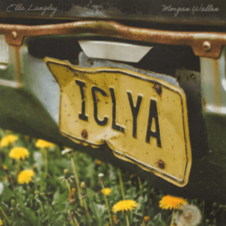

Ella & Morgan: An Iconic Duo
Written by Alli Nemec
This small piece is based around my love for country music and especially some of my favorite artists, Ella Langley and Morgan Wallen.
On April 24th, 2026, Langley and Wallen surprised their fans with a song collaboration. The song is called "I Can't Love You Anymore" and it has gone platinum in my house. As a huge fan of both of these artist's and their music, I found it to be a genius idea to put these two on a single together as a duet. Ella Langley has been topping the charts for a while now and most of them are her duets with huge male artists. I am loving how active she's been with dropping music and making public appearances to further her career and show her fans she cares!
Here is the link if you'd like to check out the song:
Listen yourself here!

Link to image source: https://www.google.com/url?sa=t&source=web&rct=j&url=https%3A%2F%2Fen.wikipedia.org%2Fwiki%2FI_Can%27t_Love_You_Anymore&ved=0CBYQjRxqFwoTCLjhqLOnpZQDFQAAAAAdAAAAABAF&opi=89978449